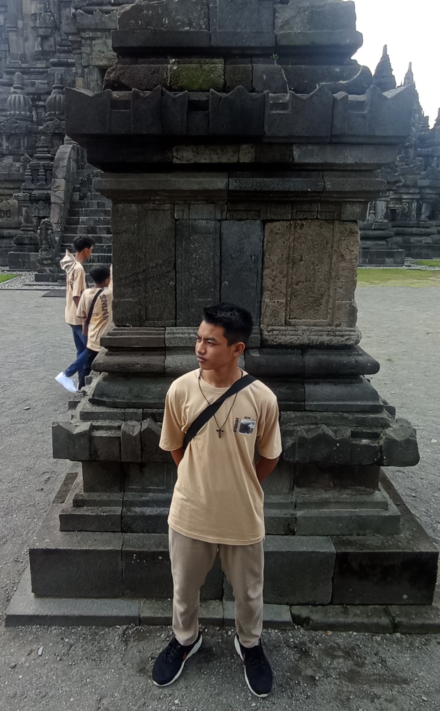

Hi,my name is
Bangkit Bayu Prasetyo
Student
Saya adalah seorang pelajar SMP berumur 15 tahun. Yang memiliki rasa penasaran yang tinggi dan suka mencoba hal yang baru.Selain itu, saya juga sangat menyukai hal hal yang berbau teknologi
